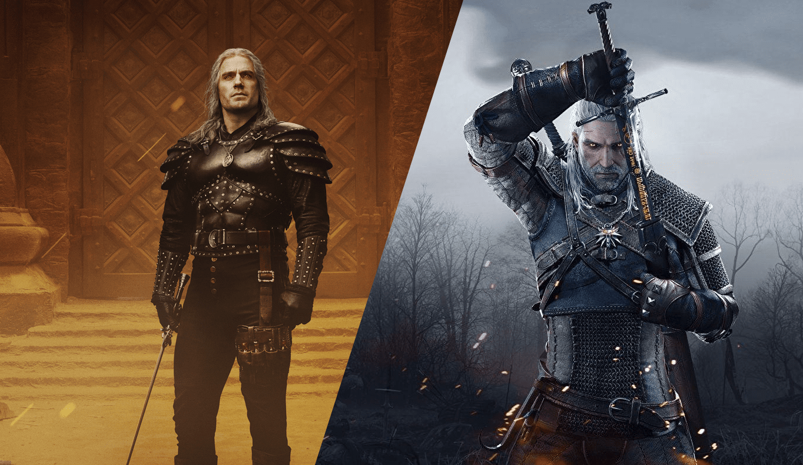

Geralt of Rivia is a fictional character and the protagonist of The Witcher series of short stories and novels by Polish author Andrzej Sapkowski. He is a magically enhanced monster-hunter known as a "witcher", who possesses supernatural abilities due to his mutations. Geralt's story has been adapted into a video game series and a show.
Geralt was born as the son of the sorceress Visenna and presumably, the warrior Korin. Shortly after his birth, his mother left him with the School of the Wolf at the stronghold of Kaer Morhen. There, Geralt was made and trained to become a Witcher. As a child, he was subjected to the Trial of The Grasses. He managed to survive the many blistering mutations required to grant Witchers their abilities. After displaying unusual tolerance, Geralt was selected to further experimental mutations which granted him considerably greater strength, speed, endurance, resilience, healing, senses, complete immunity to diseases and conventional poisons, and extreme resistance to pain. This resulted in his hair turning white, and he received the nickname "White Wolf"
After seemingly having been killed by a mob during a pogrom of nonhumans at the end of the Witcher saga, Geralt returns to life with no recollection of the details of his sudden reappearance or of the five intervening years. He is rescued by the last remaining witchers in the world and is taken back to Kaer Morhen. There, he is drawn into a complicated conspiracy concerning the witchers, their secrets, and the nefarious forces that are after that knowledge.
The Witcher 2: Assassins of Kings picks up shortly after the events in The Witcher. Geralt has been essentially drafted as King Foltest's personal bodyguard and the king is engaged in a battle with troops loyal to his mistress, the Baroness Mary Louisa La Valette after what can best be described as a lovers' spat.
The third installment of the trilogy, like its predecessors, follows Geralt through his final adventures. Following the events of Witcher 2, Geralt has regained his memory of the past and prepares to embark on a new journey. In the Witcher 3, Geralt is on the hunt for the only person he considers kin, Ciri. Along his journey, Geralt must face the Wild Hunt in order to protect the people he cares about.
This was done in poor taste and they took far too many creative liberties but Henry Cavill was the perfect casting for Geralt. Shame to see him go.